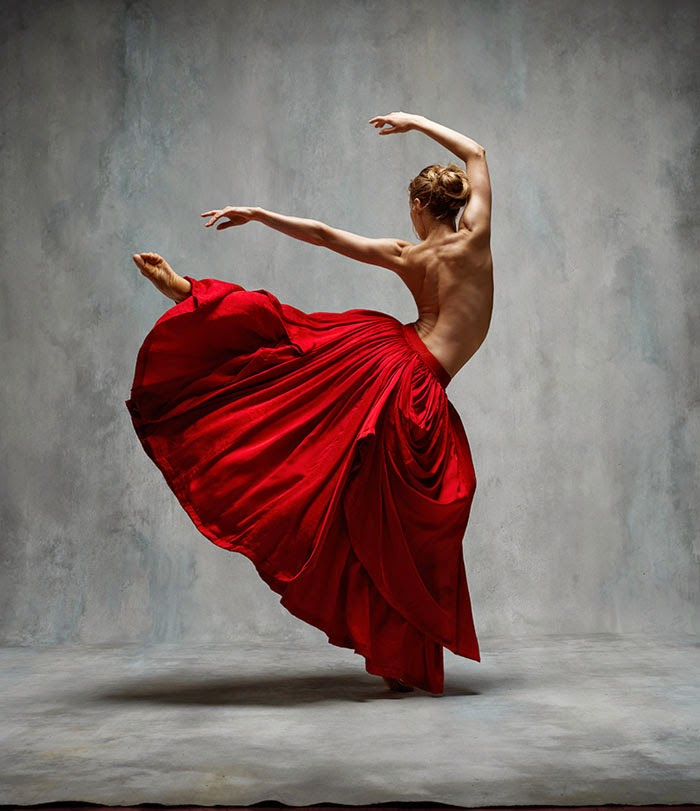

Exploring the Art of Dance
The Art of Choreography

Choreography is the process of creating and arranging movement into a dance. Choreographers consider musicality, timing, transitions, and expression when developing a piece. Every movement has a purpose, whether it follows the rhythm of the music, tells a story, or creates a particular feeling. The way movements connect can be just as important as the steps themselves.
Exploring Dance Styles
Different dance styles offer unique ways of moving and expressing creativity. Hip-hop often emphasizes rhythm, groove, and individuality, while contemporary dance explores fluidity, weight, and expression. Ballet focuses on technique, alignment, and control. Although each style has its own characteristics, dancers can learn from all of them to develop versatility and a deeper understanding of movement.